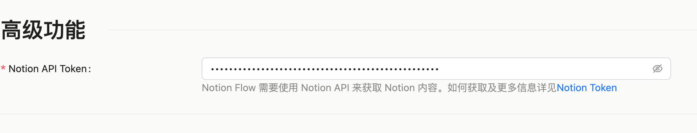
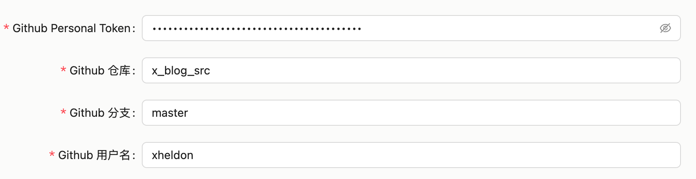
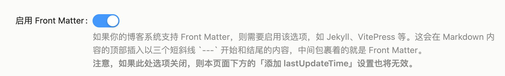
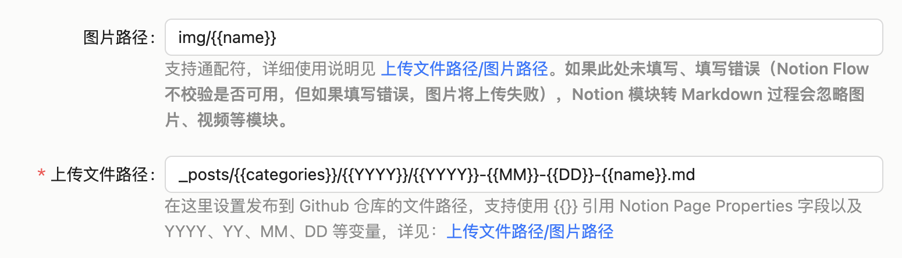
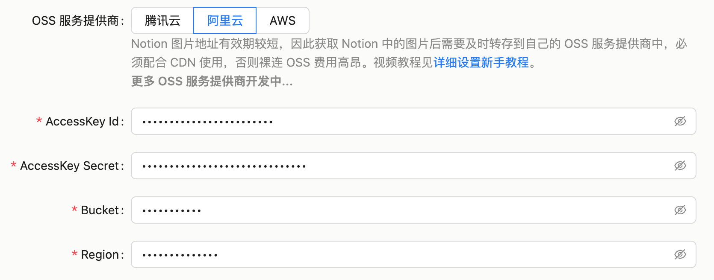
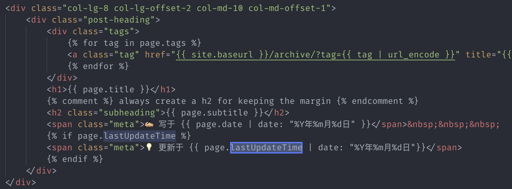
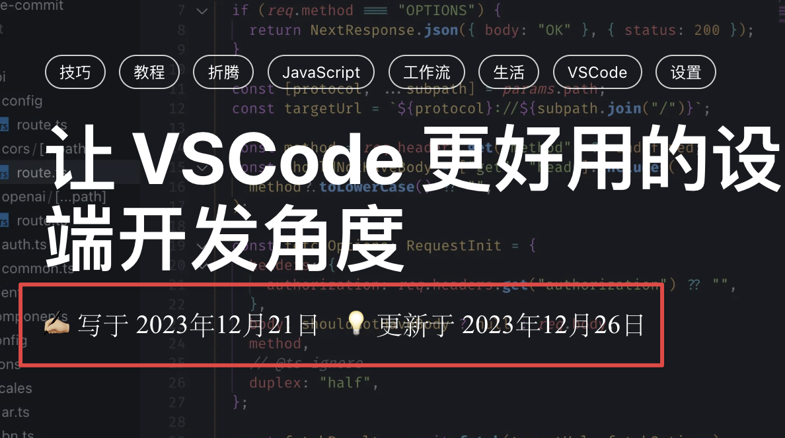
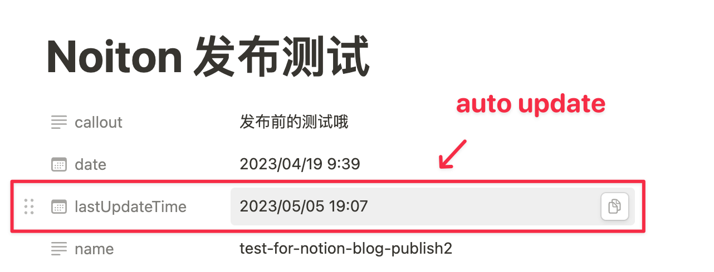

配置插件
提示
随着插件的版本更新，配置界面可能发生变化（如 0.4.5 起，设置页改为左侧分区导航：概览 / Notion / GitHub / 图片转存 / 目录&界面 / 高级 / 关于，并新增「设置向导」与「测试连接」一键校验），但相关配置项的名称与含义不会变动。本页截图仅供示意，请以实际界面为准。
Notion 配置
Notion Flow 使用 Notion API 来读取 Notion Pages 内容，其中需要用到 Notion Integration Token。
将在 Notion 配置 这一步获取的 Notion Integration Token 填入到此处：

提示
请不要忘了 授权 你要发布的 Notion Datebase！
Github 配置
Notion Flow 使用 Github Personal Token 来将内容发布到 Github 仓库。
将在 Github 配置 这一步获取的 Github 信息填入到此处：

启用 Front Matter

打开该选项后，Notion Flow 会在发布博客的时候，自动添加 Front Matter 到 Markdown 文件头部中。形式为以三个短斜线开头和结尾的内容，例如：
---
name: My article
date: 2024-01-11
---
上传文件路径/图片路径
注意
如果未配置图片上传路径，则图片等资源将会被忽略。

这里填写你的文件上传到 Github 仓库的文件路径/图片上传到 OSS 的路径。支持使用{{}}引用 Notion Pages Properties 以及四个时间占位符，包括：
YYYY表示年，如 2024YY表示简写年，如 24MM表示月，如 01DD表示日，如 01
举个例子，我的 Notion Pages 中的 Property 属性有：
- category: life（或者tech）
- name: my-article-name（值因文章名不同而不同，唯一）
因此我在这里填写上传文件路径是：_posts/{{category}}/{{YYYY}}/{{YYYY}}-{{MM}}-{{DD}}-{{name}}.md（注意要带格式，因为你上传到 Github 的文件也支持 .html），经过 Notion Flow 处理后就是 _posts/life/2024/2024-01-11-my-article-name.md。
而我填写的图片路径是：img/in-post/{{YYYY}}/{{name}}，处理后的真实地址是 img/in-post/2024/my-article-name/29c1c887-e773-40b5-9ea1-fb8c3cc703dd.webp。（自 0.4.5 起，「上传文件路径」在 GitHub 分区配置，而「图片路径」在「图片转存」里随每个转存目标各自配置。）
提示
注意，上传图片的时候，webp 是默认使用的图片格式，除了 gif、svg、mp4、webm、ogg 这几种媒体格式外，其他的格式如 png、jpg、jpeg 等，都会被转成 webp。
OSS 配置
注意
如果未配置 OSS，则图片等资源将会被忽略。
自 0.4.5 起，图片转存支持配置一个「主存储」与任意多个「镜像」：发布时图片会并行上传到所有目标，其中「主存储」的 CDN 地址会写入文章，镜像仅作备份（镜像上传失败不影响发布）。可选服务商有腾讯云 COS、阿里云 OSS、AWS S3，以及自建（兼容 S3 API，如 Cloudflare R2、MinIO）。每个目标各自填写凭证、Bucket、Region、CDN 地址与图片路径，OSS 信息的获取步骤见 这里。按照对应的名称填入即可：

提示
这里除了前两个名称叫法不同外，其他的叫法都是一样的。如 Key 在阿里云中叫 AccessKey ID，在腾讯云中叫 SecretId，在 AWS 中叫 Access Key。而 Secret 在阿里云中叫 AccessKey Secret，在腾讯云中叫 SecretKey，在 AWS 中叫 Secret Access Key。
CDN 地址配置
注意
如果未配置 CDN 路径，则图片等资源将会被忽略。
这里设置 CDN 地址，在将 Notion 图片上传到 OSS 服务后，Notion Flow 会使用该地址拼接成图片完整地址后，再将地址写入到 Markdown 中。如我这里的配置就是 http://static.xheldon.cn。（自 0.4.5 起，CDN 地址随每个转存目标各自配置；写入文章的是「主存储」的 CDN 地址。）
自动添加 lastUpdateTime
对于文章而言，尤其是技术文档，经常会有时效性，让读者知道距离首次发布时候的最后更新日期是一个常用的功能，因此 Notion Flow 支持自动添加 lastUpdateTime 字段，你只需要打开这个开关，每次博客发布 Notion Flow 都会在 Front Matter 中添加 lastUpdateTime 字段。
然后，你就可以在自己的博客中使用该字段，如我的用法：

效果如下：

自动更新 lastUpdateTime
注意
需要你先手动在 Notion Pages 中添加 lastUpdateTime Properties 字段，且 Notion 的插件需要读写权限。

使用 Notion Flow 将 Notion 文章发布博客后，你在之后的任意时间在 Notion 查看该 Page 的时候，可能会想知道该文章是否以及何时发布过，因此该选项会在博客发布成功后，使用 Notion API 更新该 Page 的 lastUpdateTime 字段。
其他 Front Matter 字段
Notion Pages 的 Property 配置，用来配置跟页面有关的 Front Matter，例如 name、date、tags 等；而此处的 Front Matter 配置，用来配置固定不变的 Fornt Matter。
对于写博客而言，你可能需要设置一些固定的 Front Matter 字段，例如 layout: post 等，因此 Notion Flow 支持在这里配置固定的 Front Matter 字段，这些字段会在每次发布博客的时候，自动添加到 Front Matter 中。
提示
Front Matter 以逗号分割，逗号及冒号前后的空格会被忽略，如 layout: post, title: 我的文章标题。
头图的 Front Matter 字段
如果打开这个选项，会将 Notion Pages 设置的头图，添加到 Front Matter 中。此处设置的是 Front Matter 头图字段的名称，例如我的头图字段是 header-img，发布博客后就是 header-img: xxx（xxx 为上传到 OSS 的头图地址）。
注意，这个输入框留空表示不使用头图功能，发布的时候会忽略 Notion Pages 设置的头图。